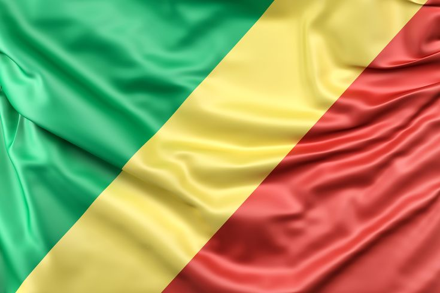

Justin Celestin Stephane Mulumba
About me
My name is Justin Celestin Stephane Mulumba but I go by Celeste, I am 22 years old, I am from The Democratic Republic of Congo(DRC). I live in The Republic of Congo (that might be confusing! but they are two different contries) in Point-Noire which is actually the economic city of The Republic of Congo. I am a software development student at BYU-IDAHO through BYUPATHWAY-Worldwide. I enjoy learning programming, web development, and technology. My goal is to build software solutions that can positively impact education and communities in Africa.
Republic of Congo

The Republic of Congo is located in central Africa. Its capital city is Brazzaville. The country is known for its tropical forest, rivers and its cultural diversity. French is the official language and the country shares the Congo river with the Democratic Republic of Congo